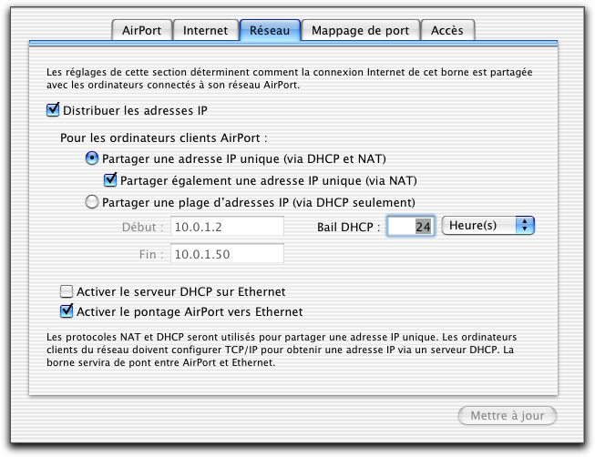
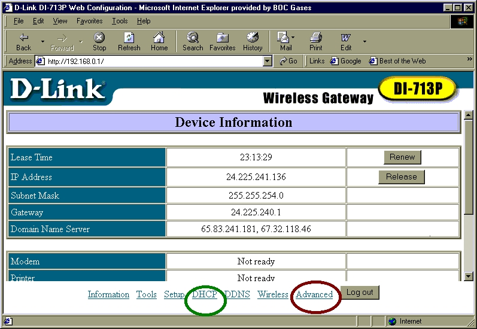
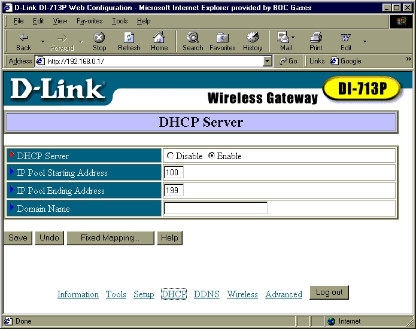
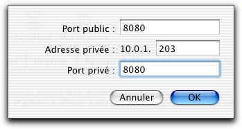
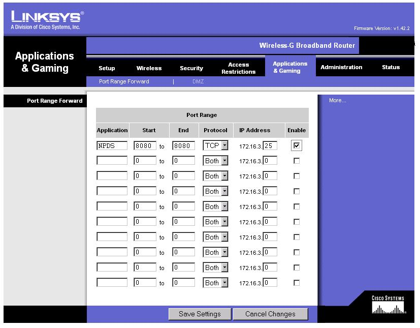
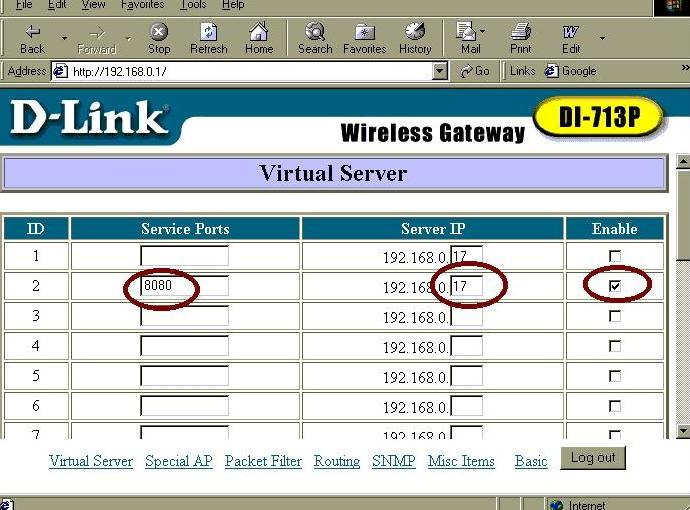
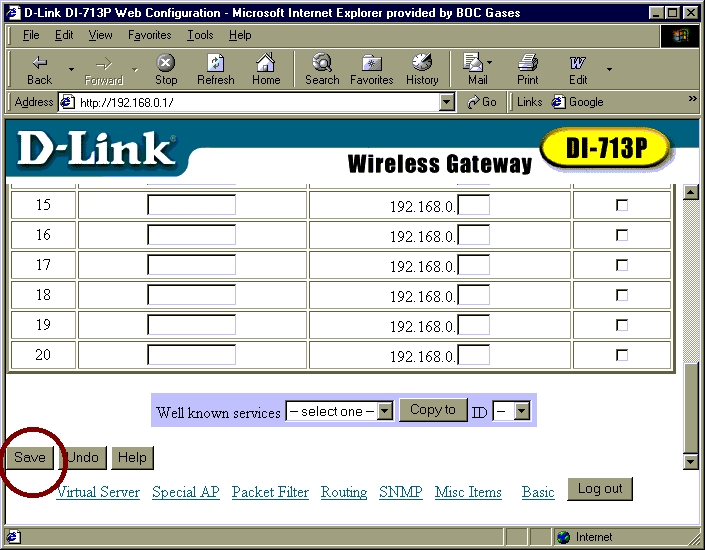
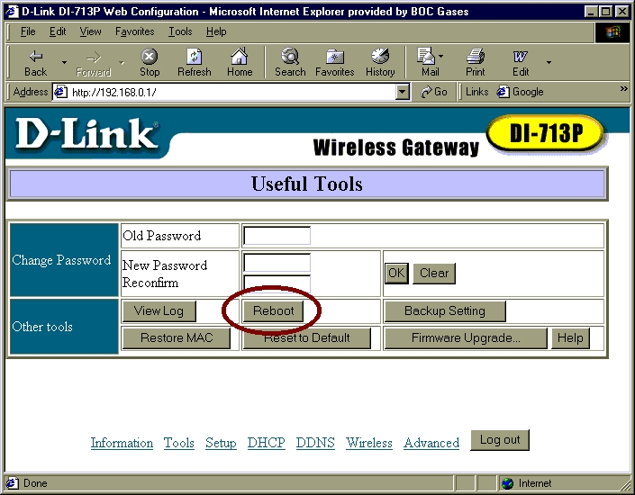
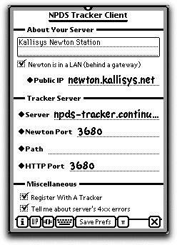

This document explains how to set up NPDS in a private network, i.e. if your Newton shares your Internet access with other machines. If your Newton is connected directly to the Internet (or if you gave it a public IP), you don't need a particular setup. This document is also intended for users who want their Newton to be available to the Internet.
Please note that to make NPDS work you will need full access to the router, i.e. to the machine that is connected to the Internet. This is the case at home but you might have to convince the sysadmin at work. Please also note that this won't work with Internet Service Provider who don't offer a "Full IP" internet access, such as AOL.
You will need to configure the router and to be honest this is one of the most tricky part of this setup. We give various examples. Please note that the router doesn't need to be a dedicated device (like an Airport base station), it can be your main computer.
Additionally, since this document assumes that you want to share your Internet access among several computers, it assumes that you want to do so over Ethernet which is the only possible way (well, this probably can be done over LocalTalk as well). Hence it assumes that you have a NewtonOS 2.1 device (i.e. a MP2x00 or an eMate 300) and an Ethernet or compatible card (e.g. 802.11b) that works with your Newton. Ethernet cards require NIE 2.0 which requires NewtonOS 2.1. So there is no way to share your Internet connection with a MP1x0 (I think)
This document is also intended for people with little or no knowledge of networking. Don't hesitate to ask on the NPDS mailing list for help or clarification (see the last part of this How-To).
Please read the document carefully before you begin and execute the steps in the order of the document. Some steps only apply to particular network configuration.
The first step of the NPDS Network Setup is to access the internet from your Newton. NPDS is a server, but you need to access the Internet as a client first for two reasons:
In fact, NPDS core only works as a server. Some users in the past didn't configure their Newton as a client (i.e. it wasn't able to access the Internet completely). These users had an advanced networking knowledge and had very good reasons for doing so. If you really want to do so and you need help, ask on the NPDS mailing list.
For an Internet access over Ethernet on your Newton, you need:
Install the packages in this order. Except some weirdness with the 3Com, once you have installed Newton Devices and the Newton Driver, a popup window should appear when you insert your Ethernet card.
You also need to setup your local network to let the Newton access the Internet and to setup your Newton accordingly.
For NPDS to work properly, you shouldn't allocate an address dynamically to your Newton, i.e. you should perform a manual setup instead of a DHCP or self-setup (i.e. ZeroConf). You might be able to serve pages with a dynamic setup, but it has to be rather stable.
The router machine should be configured for doing NAT, i.e. for letting your Newton access the Internet. Most hardware routers are configured like this out of the box. You need a special router software on your computer if you mean to use it as the router (this is included in most Unices).
You need to enable NAT on your hardware Airport base using Airport Admin Utility. You also need to tell it to distribute IP addresses. Here is a sample setup:

Airport bases allows static IPs in the range 10.0.1.51-10.0.1.something for Ethernet clients and 10.0.1.200-10.0.1.254 for Wireless clients. Setup your Newton accordingly. The submask is 255.255.255.0. The gateway is 10.0.1.1.
If your Airport connects to the Internet via DHCP, you can find the DNS servers of your Internet Service Providers in the Internet Tab of the Airport Admin Utility. If your Aiport connects to the Internet by other means, consult your ISP to know which DNS servers you should use. Configure your Newton to use these servers.
To be written
To be written
To be written
To be written
First, checkout the manual (http://www.netbsd.org/Documentation/) for basic network settings.
Setup your LAN (assign 192.168.1.1 to the router and 192.168.1.2 to 192.168.1.254 to the inside computers, for example) on one interface. Setup your internet connexion on a different interface.
in /etc/rc.conf, insert "ipnat=YES"
in /etc/ipnat.conf, insert:
map <out if> 192.168.1.0/24 -> 0/32
where <out if> is the name of the outside interface (tlp0, rl1, en2, etc...)
If you reboot, the NAT will be activated. If you do not want to reboot, just type /etc/rc.d/ipnat start.
There you are, you LAN accesses the web through your NetBSD with ipnat.
Connect to the D-Link router's IP address using your browser. This is usually done by typing 192.168.0.1 into the browser's address.
A login screen appears. For my D-Link DI-713p, you type in the system password only. The default system password is "admin" (no quotes).
Note -- Most other routers require a username and a password. For a D-Link DI-614, you must type in a username and password. The default username is "administrator" (no quotes), the default password is blank (that is, type nothing into the password field).
An information screen appears.

Click the DHCP link at the bottom (it's circled in green in the screen shot). Check that the DHCP server is enabled and the IP addresses that are reserved for dynamic assignment and those that are reserved for static assignment.
For this router, the dynamic addresses pool extends from 192.168.0.100 through 192.168.0.199. Addresses below ".100" are not dynamic, they are static IP addresses. Choose a static address for your Newton, like 192.168.0.17.

Once you have setup your Newton to share your Internet access, test the result using Internet clients such as Newtscape, SimpleMail or NetHopper. I suggest NetHopper because it requires no special configuration (unless you have to use an HTTP proxy) and it displays the Newton Internet Enabler dialogs so you can easily figure out what is going wrong.
The next step is to install NPDS and try to access it from another computer in your private network (this is to check that everything works).
Install NPDS core package (nHTTPd) from http://npds.free.fr. Also install the configuration package if you want to fine tune the NPDS server. Other packages won't hurt except the tracker client that will try to connect to the tracker server and we'll configure it later. Freeze it, disable it or delete it for the moment.
Press the start button on NPDS core package. The Newton will automatically start and serve pages on default port (or any port you might have configured in the preferences). Then type your Newton's private IP (what the NPDS core package displays, i.e. 10.0.1.203) in a browser running on a computer on your local network. Some browsers require that you put http:// at the beginning to work. Put a colon followed by the port if it isn't 80 (e.g. if it is 8080).
The URL would therefore be something like:
If you get a page in your browser then NPDS works. Congratulation. Next step is to make it available on the Internet.
To make your Newton available on the Internet, you need to tell your router to forward requests to your Newton. This is called port mapping.
Let's say that you want your Newton to serve on port 8080 and configured it accordingly (in the preferences, Admin tab, TCP/IP Prefs). You need to tell the router to map any request on port 8080 to your Newton (on port 8080). Please note that for the moment, you need the external port to be the same as the internal port. This shouldn't be a problem. If it is, ask me, I'll make the required changes to support different ports.
This setup depends on your router.
To map ports with Airport, you need to click the Port Mapping tab and then add a new entry. Enter the port (in both public and private fields) and the private IP of your Newton like below:

Save the changes and the Airport Admin Utility will restart the Airport base.
To be written
To be written
To be written
To be written
In /etc/ipnat.conf, insert:
rdr <out if> any port <incoming port> -> <newton address> port <port> tcp
where <out if> is the name of the outside interface, <incoming port> the public port to forward to the newton, <newton address> the newt address (no kidding? ;) and <port> the port the newt is listening on.
Restart your ipnat (with "/etc/rc.d/ipnat restart") and you are done with the config.
Victor Rehorst provided us with this screen shot of his router's port forwarding setup in a browser. His Newton's private IP is 172.16.3.25 and it serves web pages on port 8080.

In the information screen, click on the Advanced button, it is circled in red in the first screen shot. At the advance tab, we set up the router to allow in-bound internet traffic to reach the NPDS server. One of the recommended port to use for NPDS is 8080, so I have entered that port in the "Virtual Server" list. I have also entered my NPDS Newton's fixed IP address there, so that the router knows which computer will receive the inbound traffic. In my case, I set my Newton's Internet Setup program to use the fixed IP address 192.168.0.17. Therefore, I typed in 17 next to the port 8080. You also must check the "Enabled" column to make this work.

You must save this router change, scroll down to the bottom of the screen and click the Save button.

The router respond with the message "You must reboot to make the change active". There are two ways to reboot, a) pull the power plug out and then put it back in, or b) use the reboot command. You can reach reboot command by clicking on the Basic button, and then clicking on the Tools button.

The next step is to test the result. Since you are inside the network, you will need to ask someone to test it for you. Fortunately, there are servers that can do this for you. I suggest to use W3C's validator (http://validator.w3.org). In the URI field, put http://, then your public IP, i.e. the external IP of your router, and finally a colon and the port number if it's not 80. If the validator tells you that the server isn't reachable, check the tracker's settings. If it tells you that the page complies (or doesn't, you should only have warnings with a default NPDS installation, though), then your Newton was accessed. Check that the hit counter increased (or that your Newton made a tick if the sound is on).
I want to insist on the concept of public IP. Your router has two IPs, an internal IP and an external IP. The internal IP is a private one, it looks like your Newton's IP. You can read your public IP on various websites, like for example http://checkip.dyndns.org/. Note that if you have a proxy, this might give you your proxy's IP. You might want to try http://checkip.dyndns.org:8245/.
The last step is to register your Newton to the tracker server so Newton fans can find and visit your Newton. To do so, install the Tracker client. There is a special setting for Newtons sharing the Internet connection: check the Newton is in a LAN checkbox and enter your router's public IP in the Public IP field.
If your router connects to the Internet via DHCP, its address might change. And therefore you will have to update the tracker client settings to register the proper IP.
Instead, you can put a domain name in the Public IP field and update that name when your IP changes. There are dynamic domain name services on the Internet like dyndns (http://www.dyndns.org/). Install an automatic IP update client on one of the machines on your network (like the router if it's a computer), tell it to get the IP externally (unless it's the router) and put the dynamic domain name in the Public IP field.
In the end, you should have a tracker client setup like this one:

Please use a tracker server running a recent version of the tracker server software (>= 0.1.31). These recent servers will return an error if you tried to register with a private IP and therefore prevent you from doing this mistake without realizing it.
Finally, you normally cannot access your Newton from the tracker server page on your private LAN unless you hacked some files on your desktop computer. This is normal. Use the private IP instead.
To obtain help, please subscribe the NPDS mailing list and ask there.
This document was written by Paul Guyot, Nicolas Zinovieff (NetBSD setup) and Allen Russell (D-Link router setup) put your name here ;). Comments are welcome.
|
|
|